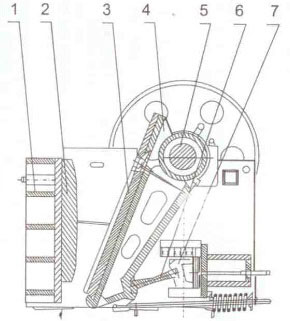
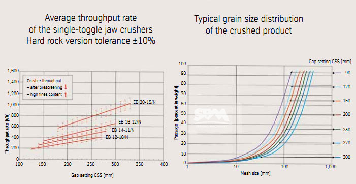

Jaw Crusher Overview
Jaw Crusher is widely used in mining, smelting, building material, highway, railway, water conservancy and chemical industry in a variety of ores and bulk materials of medium-grained broken, As professional crusher manufacturer,SBM can supply PE series , PEW series and HJ series jaw crusher.
As we all known, Jaw crusher is a movable jaw and fixed jaw composed of two crushing chamber to simulate the movement of animals and completed two jaw crushing machinery materials operations. According to the activities of the swing jaw way, jaw crusher is divided into two types, namely, simple swing jaw crusher and compound pendulum jaw crusher, similar to their works processing.
Jaw Crusher Structure
The jaw crusher consists of: 1. frame parts 2. fixed jaw plate 3. movable jaw 4. movable 5. eccentric shaft 6. toggle 7. adjusting toggle seat 8. rail parts 9. lubricate parts 10. foundation parts 11. electrical cortrol parts.
Structure design is good for jaw crusher capacity: integrated steel structures are used for the base of bearing. The jaw crusher's chamber uses "V"-shaped structure, so that the feeding size equal to the nominalssss one.The crushing chamber is deep and without dead zone, increases the capacity and the output. Lubrication system is safe and reliable, convenient to replace parts, easy to maintain for jaw crusher.
How To Improve The Capacity Of Jaw Crusher
Jaw crushers are most commonly used as primary crushers, to make the first step of size reduction. In some cases the jaw crusher is used to produce final end product but in most cases the jaw crusher is used to prepare the feed for the secondary crusher in a crushing and screening process. The capacity sizes are determined by the model numbers, one being the measurement in inches from the top of the crown on the stationary jaw plate to the top of the crown on the movable jaw plate; and the other being the width between the side liners.
